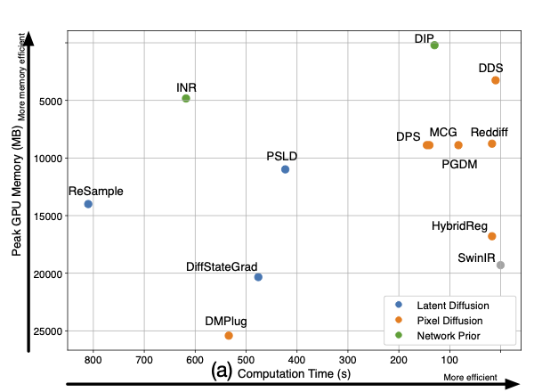
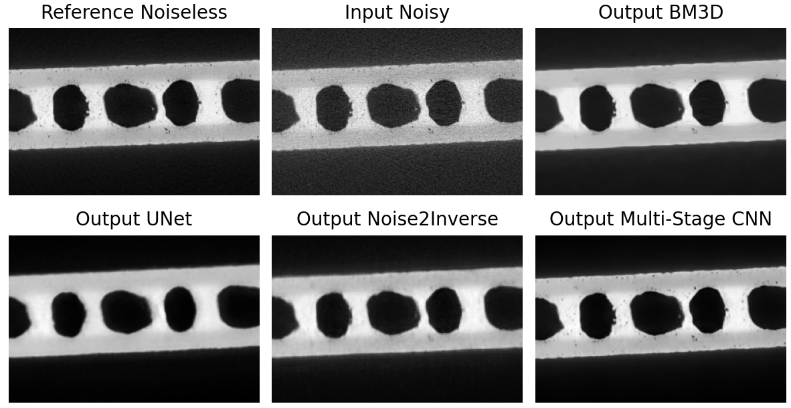
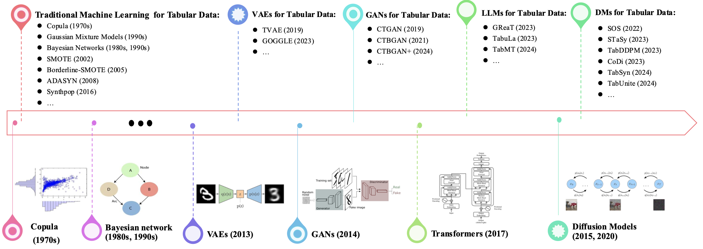
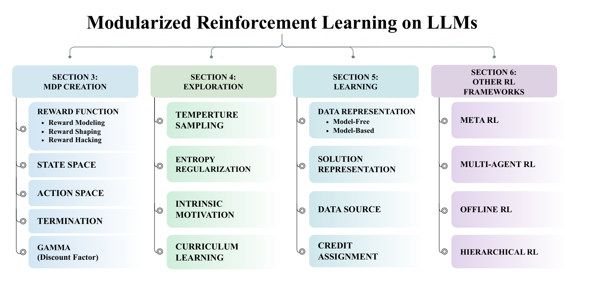

Research
Grouped by topic — click a category to expand.
|
Generative Models for CT Reconstruction2 papers
|

|
DM4CT: Benchmarking Diffusion Models for Computed Tomography Reconstruction
Jiayang Shi,
Daan Pelt,
Joost Batenburg
International Conference on Learning Representations (ICLR) , 2026
website
/
code
/
dataset
/
openreview
DM4CT is a comprehensive benchmark for diffusion-based methods in CT reconstruction. It systematically
compares ten state-of-the-art diffusion models alongside modern learning-based approaches (e.g., Gaussian Splatting and INRs)
and classical reconstruction algorithms across diverse CT datasets. The benchmark provides detailed insights into
reconstruction quality, efficiency, and practical trade-offs. In addition, we introduce a new real-world high-resolution
synchrotron CT dataset to facilitate realistic evaluation of CT reconstruction methods.
|
CT Image Quality Enhancement3 papers
Show 1 more paperShow fewer papers
Neural Rendering (NeRF-style) CT Reconstruction1 paper
Industrial CT Applications2 papers
|

|
A Comparative Study of Supervised and Self-Supervised Denoising Techniques for Defect Segmentation in Industrial CT Imaging
Virginia Florian,
Jiayang Shi,
Willem Jan Palenstijn,
Daniël M. Pelt,
Joost Batenburg,
Thomas Lang,
Christoph Heinzl,
Christian Kretzer,
Stefan Kasperl,
Dominik Wolfschläger,
Robert H. Schmitt
International Conference on Industrial Computed Tomography (iCT) , 2025
proceeding
/
doi
A study of how the choice of denoising method affects downstream defect detection in fast-scan industrial CT.
BM3D, a supervised UNet, the self-supervised Noise2Inverse and a multi-stage CNN are compared on two real
aluminium samples, scored both on image quality (PSNR/SSIM) and on the Dice score of the defects segmented
from their outputs. Denoisers that look good by image-quality metrics can erase the small, low-contrast pores
that matter, showing that the denoiser must be selected for the analysis task and not for the metric alone.
|
Graph Neural Networks and Anomaly Detection2 papers
Surveys: Diffusion for Tabular Data & RL on LLMs2 papers
|

|
Diffusion Models for Tabular Data: Challenges, Current Progress,
and Future Directions
Zhong Li,
Qi Huang,
Lincen Yang,
Jiayang Shi,
Zhao Yang,
Niki Van Stein,
Thomas Bäck,
Matthijs van Leeuwen
Under review, 2026
code
/
paper
Survey paper on diffusion models for tabular data.
|
|

|
Modularized Reinforcement Learning on LLMs: From MDP Creation to Exploration
and Learning
Zhao Yang,
Yuxuan Jiang,
Ting-Chih Chen,
Lincen Yang,
Annie Wong,
Chao Gao,
Jacob E. Kooi,
Zhong Li,
Jiayang Shi,
Kevin Qiu,
Qi Huang,
Xinrui Zu,
Shiping Yang,
Hengyuan Zhang,
Ngai Wong,
Filip Ilievski,
Shujian Yu,
Aske Plaat,
Zhaochun Ren,
Mark Hoogendoorn,
Vincent François-Lavet
Under review, 2026
arXiv
/
paper
Survey paper on reinforcement learning for LLM post-training.
|
Other Research1 paper
|